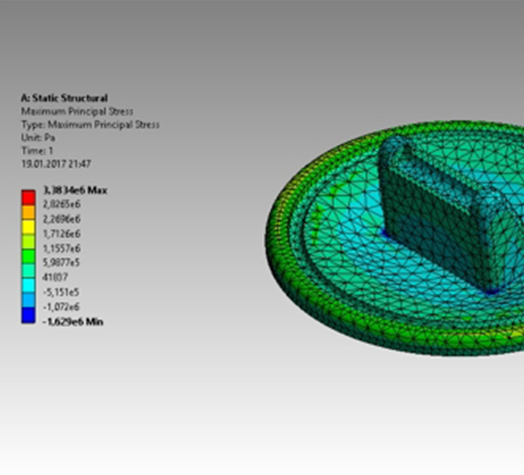

MECH ANICAL

1. ANSYS
1. Analysing projects (all_impact)
1. Department for submitting your requirements
RESEARCH AND DEVELOPMENT_MECHANICAL SYSTEM
I shall undertake the crafting of two-dimensional and three-dimensional models, meticulously scrutinizing the concepts you have imparted to me. For instance, should you seek a machine for bending rods, I will conduct exhaustive research and analysis, compiling and presenting all requisite details to advance its manufacture, thereby facilitating the seamless and effortless pursuit of rod-bending endeavors. Moreover, should uncertainty cloud your judgment in selecting a decision, design, or material for manufacturing or other undertakings, I shall identify and propose the most superior option.
SOFTWARE
1. ANSYS
2. MS-OFFICE
3. PRO-E
4. TRIBON M3
5. AUTOCAD
6. DRAFTSIGHT
PROFIENCY IN
1. Analysing projects (all_impact)
2. 2D/3D Modelling
3. Prepare POM and POTS
REQUIREMENTS After Sign IN / Sign UP
1. Department for submitting your requirements
2. Brief your information
3. Time-line of your projects
HEMSWORTH PVT LTD
{kind=link}
HOME CLICK HERE....